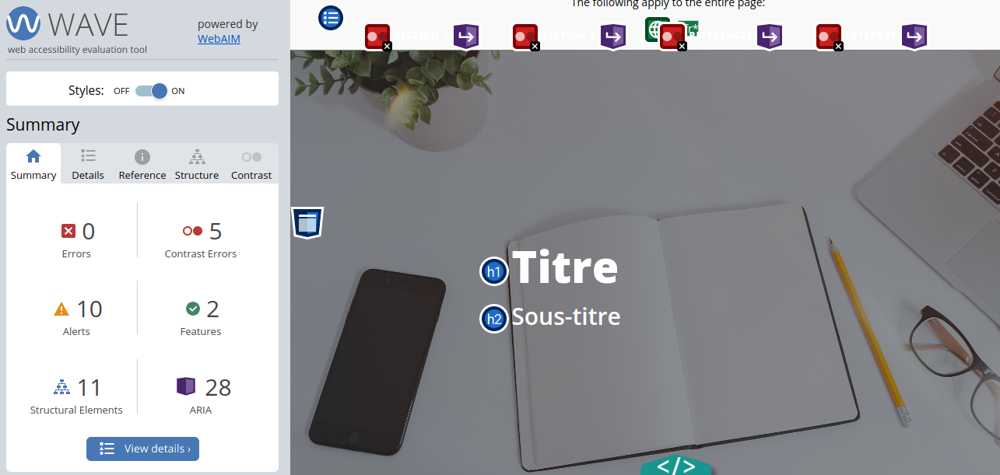
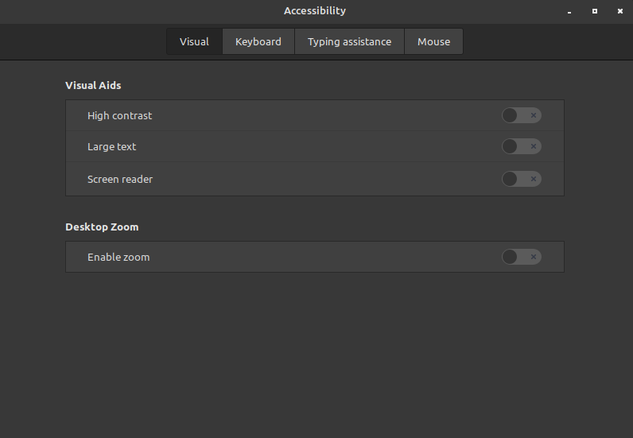

Introduction
Les utilisateurs peuvent avoir toutes sortes de limitations et de besoins particuliers. L'accessibilité vise à permettre l'utilisation d'une ressource malgré ces limitations et ces besoins particuliers.
Lorsque nous parlons d'accessibilité, l'image qui vient généralement est celle d'une personne en fauteuil roulant ou aveugle. Mais l'accessibilité rejoint un bien plus grand nombre de cas. Par exemple, le daltonisme. L'utilisation de certaines couleurs peuvent rendre difficile l'utilisation d'une ressource pour certaines personnes. Ou les problèmes de vision, comme les cataractes. N'offrir qu'une taille de polices de caractères pourrait rendre inutilisable la ressource pour toute une population. Ou des limitations temporaires, comme s'être cassé le bras. Ce qui impliquerait une adaptation à un autre mode de fonctionnement. Si la ressource ne permet pas ce genre d'adaptation, elle deviendra inutilisable, entrainant frustration pour cet utilisateur.
Web
L'organisation qui établit les standards du web, le World Wide Web Consortium, a établi une norme d'accessibilité, le Web Content Accessibility Guidelines.Cette norme est basée sur quatre principes :
- Percetible: l'information est présentée de différentes façons.
- Opérable: la fonctionalité est utilisable selon différentes modalités.
- Compréhensible: l'information et la fonctionalité sont compréhensibles.
- Robuste: le contenu peut être interprété par une variété de technologies.
Le standard évolue pour suivre l'évolution technologique. Mais chaque version inclus la précédente. En clair, la version 2.0 est la version 1.0 plus les ajouts de la version 2.0.
WCAG 2.0
- Date de 2008.
- Contient 12 directives pour les quatres principes.
- Comprend 61 critères de succès, divisés en 3 niveaux :
- A : le plus facile à atteindre
- AA : demande davantage de travail pour l'atteindre
- AAA : difficile à atteindre. Être dédié pour y arriver.
Malgré que le niveau A soit aisé à atteindre, peu de site y arrive, faute de conscientisation. L'organisation WebAIM évalue un million de sites à chaque année. Un peu plus de 3% respecte le standard WCAG. Il y a donc encore bien du travail à faire.
WCAG 2.1
- Date de 2018.
- Améliorations pour :
- les personnes avec des limitations congnitives et d'apprentissage
- les personnes ayant une faible vision
- les utilisateurs d'appareils mobiles
- Doit d'abord se conformer à la version 2.0
- Ajoute 13 directives
- Ajoute 78 critères de succès, divisés entre les niveaux A, AA, AAA
Afin de respecter le standard WCAG, des outils ont été développé. Bien qu'ils soient utiles, ils ne peuvent détecter tous les problèmes. Rien de tel que de se mettre dans la peau de quelqu'un avec des limitations pour détecter les problèmes.
- Comment se comporte le site dans un lecteur d'écran ?
- Le site est-il entièrement utilisable au clavier ?
- Est-ce qu'appliquer un grossissement des caractères rend le site incompréhensible, voir inutilisable ?
- Est-il lisible avec différentes palettes de couleur ou différents éclairages ?
- Les images sont-elles décrites ?
- Les vidéos ont-elles des sous-titres ?
- etc.
Au final, l'accessibilité web est notre responsabilité et revient à se demander combien d'utilisateurs pouvons-nous perdre faute de rendre notre site accessible ?
 Exemple de rapport du logiciel d'évaluation de l'accessibilité du logiciel WAVE.Ailleurs
L'accessibilité ne se limite pas qu'au web. Les applications sur les ordinateurs et les appareils mobiles doivent aussi en tenir compte. Il est frustrant qu'une interface exige l'emploi d'une souris ou ne puisse être lu et contrôlé par la voix.
Puis, une grande part de la population mondiale n'emploi que des appareils mobiles, principalement des téléphones, ce sur des réseaux désuets. Il facile de l'oublier lorsque nous sommes dotés de la dernière technologie, mais si nous voulons rejoindre le plus grand nombre de personnes possible, nous devons y penser.
 Panneau de configuration de l'accessibilité sous Linux Mint Cinnamon.